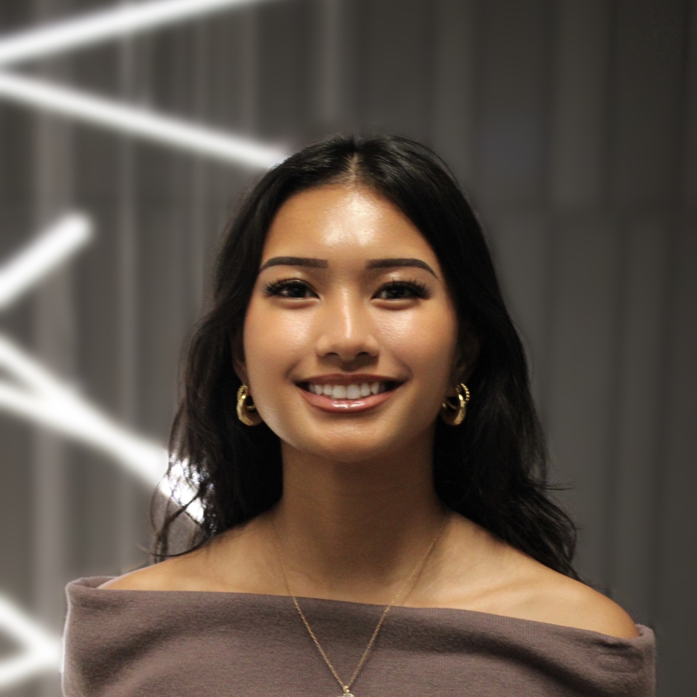

🏝️
About Me

I’m a Computer Science (Honours) student at Wilfrid Laurier University focused on AI safety, machine learning, and security-minded engineering. I started working toward an AI safety career in December 2025, and I’m particularily interested in building reliable systems and understanding how technical decisions shape real-world risk.
BSc CS @ Laurier
WAIA Founder
EAG SF 2026 Volunteer
AI Safety Career-Building (Dec 2025 →)
Technical Interests
AI safety engineering, evaluation & testing, reliability, and security-minded ML.
I like work that’s practical, measurable, and grounded in real-world failure modes.
Community & Leadership
I founded the Waterloo AI Association (WAIA) to build a Waterloo-region hub for students exploring AI safety,
governance, and responsible AI. I focus on community-building, outreach, and making it easy for beginners to get started.
Experience Snapshot
ML data + research support (internship), student leadership, and hands-on operations work.
I care about building systems that are understandable, testable, and safe by design.
What I’m Building Toward
Quick Timeline
- Dec 2025: Started focused AI safety career-building.
- Jan 2026 - present: Founded WAIA (Waterloo AI Association).
- Feb 2026: Volunteered at EA Global San Francisco (EAG SF).